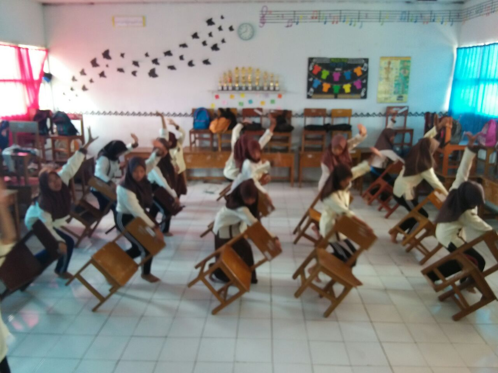
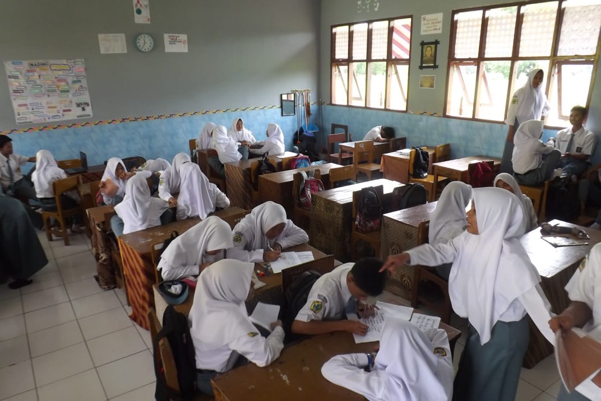
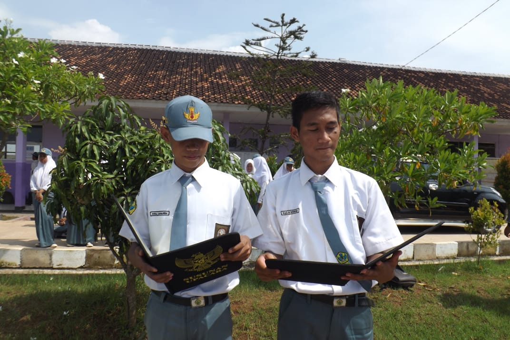
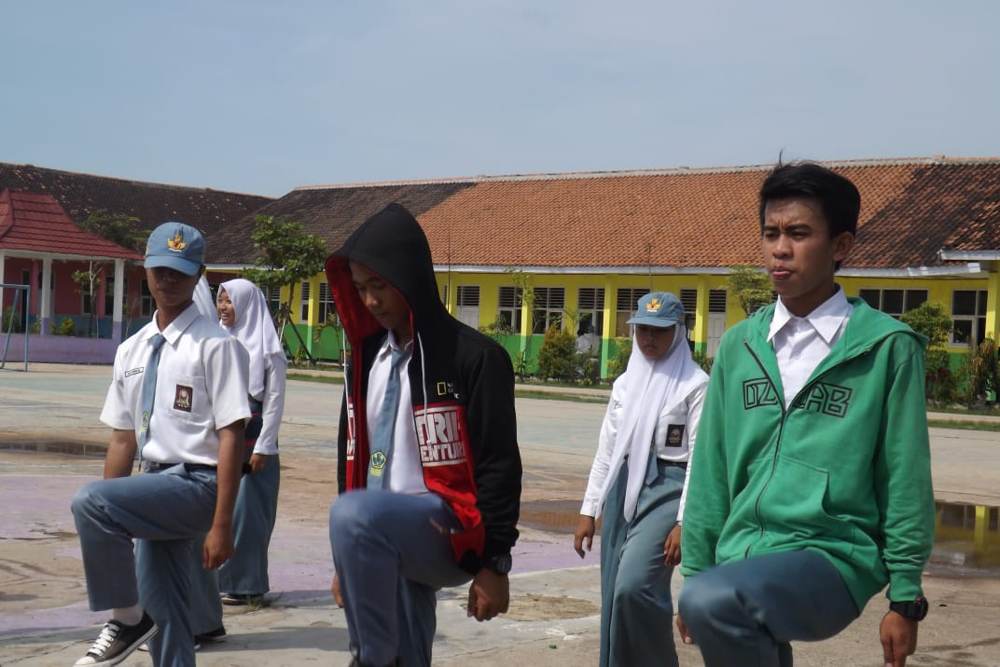

SMA Negeri 1 Lemahabang merupakan sebuah sekolah menengah atas yang berada di wilayah Kabupaten Cirebon, dengan alamat di Jl. KH. Wahid Hasyim No. 70 Cipeujeh Wetan Kecamatan Lemahabang. SMA Negeri 1 Lemahabang yang memiliki NPSN 20214995, memiliki luas 6625 m2 dengan posisi geografis berada pada garis lintang -6,8306 dan garis bujur 108,6214. SMA Negeri 1 Lemahabang memiliki sarana dan prasarana yang lengkap. Sehingga sangat mendukung dalam proses belajar mengajar yang diselenggarakannya. Mulai dari Ruang Kelas, Ruang Guru, Ruang Kepala Sekolah, Ruang Tata Usaha, Laboratorium serta Perpustakaan. Ditambah dengan sarana pendukung lainnya seperti Mushola, Toilet (WC), Ruang OSIS, Ruang UKS, dan Koperasi. sekolah jenjang menengah atas lainnya, di SMA Negeri 1 Lemahabang juga tersedia dua jurusan yang bisa diikuti oleh siswanya. Jurusan yang tersedia adalah jurusan Ilmu Pendidikan Alam (IPA) dan Ilmu Pendidikan Sosial (IPS).
Prestasi

latihan tari
.jpg)
makan baso

belajar

latihan membaca protolol

latihan pengibaran bendera